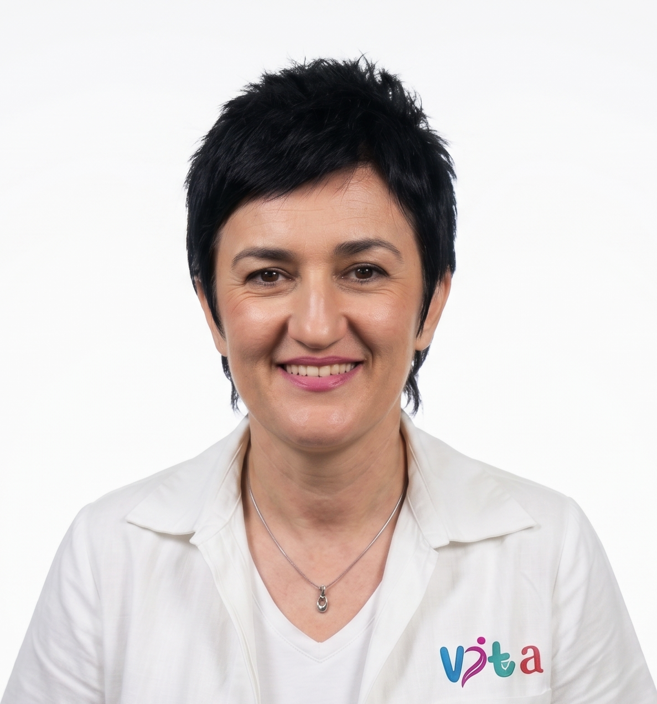

Naša filozofija je jednostavna: tijelo najbolje napreduje kada ga razumijemo, a ne forsiramo. Stručno odabranim terapijama pomažemo Vam da se krećete sigurnije i sa više lakoće.
DRAGO MASATOVIĆ

DIPLOMIRANI FIZIOTERAPEUT SA SPECIJALIZACIJOM IZ GERONTOLOGIJE I BRIGE O STARIM LICIMA, LICENCOM IZ ORTOPEDSKE MANUALNE TERAPIJE, ZVANJEM KINESIOTAPING INSTRUKTORA I SKORO 40 GODINA ISKUSTVA. PROFESIONALNO ISKUSTVO STICAO JE U UKC KOŠEVO SARAJEVO, UKC TUZLA I NA POLICIJSKOJ AKADEMIJI U DOHI, A OD 2006. GODINE VLASNIK JE ORDINACIJE ZA FIZIOTERAPIJU „VITA” U TUZLI. EDUKACIJU JE STICAO NA UNIVERZITETIMA U TUZLI, SARAJEVU I TRONDHEIMU, UZ BROJNE STRUČNE EDUKACIJE U BIH, HRVATSKOJ I QATARU.

MAGISTRA FIZIOTERAPIJE SA VIŠEGODIŠNJIM ISKUSTVOM U OBLASTI REHABILITACIJE I FIZIOTERAPIJSKIH TRETMANA. OD SAMOG OTVARANJA ČLAN JE STRUČNOG TIMA ORDINACIJE ZA FIZIOTERAPIJU „VITA” U TUZLI, GDJE AKTIVNO DOPRINOSI INDIVIDUALNOM PRISTUPU I KVALITETNOJ NJEZI PACIJENATA. DIPLOMIRALA JE I MAGISTRIRALA NA FAKULTETU ZA FIZIOTERAPIJU U TUZLI, A SVOJE ZNANJE KONTINUIRANO USAVRŠAVA KROZ BROJNE STRUČNE EDUKACIJE I SEMINARE U BOSNI I HERCEGOVINI I HRVATSKOJ.
"Vjerujemo da je ključ uspješne rehabilitacije u partnerskom odnosu s pacijentom i kontinuiranom usavršavanju naših metoda."
VESNA ALTUMBABIĆ